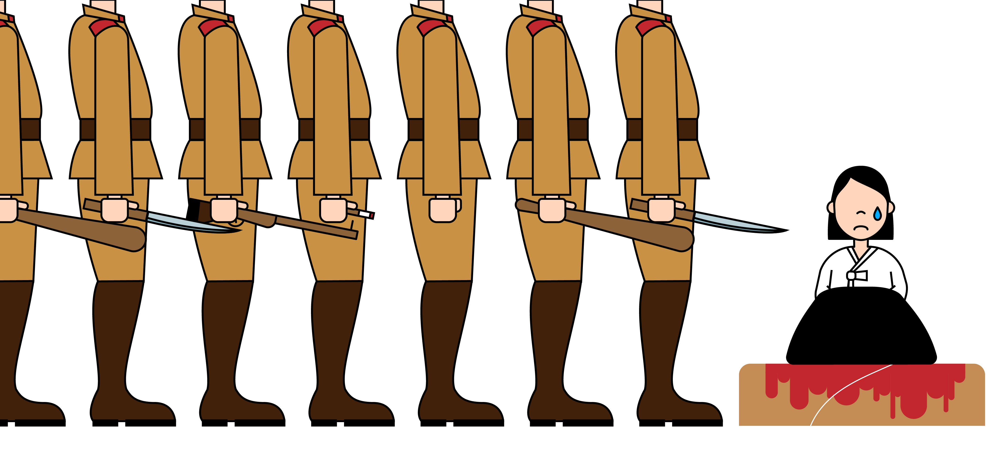

hello
I’m Minji Kim.
I was born on 1923 in Jinju, Korea.
I live in Korea with my parents and little sister.
I’m Minji Kim.
I was born on 1923 in Jinju, Korea.
I live in Korea with my parents and little sister.
One day, people came to me and asked work with them.
They said, I can earn a good monthly income and they will give rice.
Everyday, sturggling with violence, cruelty, fear, and sadness, I dealt with about 60 - 70 person of Japanese soldiers.

During most of my friends passed away at Japan, I returend alive from there.
But, if no one apologise to me and us, who recompense our passed youth, and life?

‘Comfort women’ refer to women who were forcibly mobilized and forced to live as sex slaves in brothels called ‘comfort stations’ established by the Japanese military under the pretext of efficiently carrying out war after September 18, 1931, when the Manchurian Incident took place up until when Japan was defeated in the Pacific War in 1945.
Most of the victims who "came out" have passed away without receiving any apologies or compensation. Other surviving victims, whose exact number is unknown, await the end of their own pain and poverty, concealing the fact that they were once Japanese military comfort women. Not a moment should be lost in resolving this problem as there is little time left for the aging survivors.
The comfort women system was a war crime and a gross violation of human rights. Wartime sex crimes are still being committed and are likely to be repeated in the future. To prevent the repetition of such a tragedy, it it imperative that this state-led wartime crime against women should reach a fundamental resolution. It is also a touchstone for our own attitudes about human rights in this global age.
In order for Japan to become a truly responsible member of the international community, it is imperative that it face its past with sincerity and honesty.